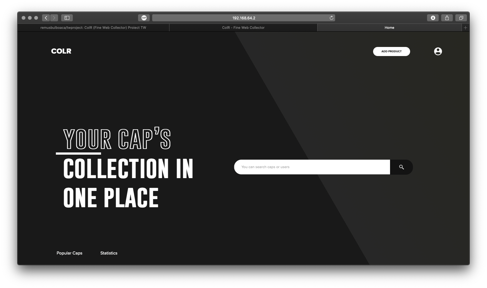

ColR - Fine Web Collector se adreseaza colectionarilor de capace, dopuri si etichete specifice recipientelor folosite pentru inmagazinarea bauturilor (ne)alcoolice. Pe baza facilitatilor de cautare multi-criteriala implementate, utilizatorii autentificati vor putea crea, inventaria si partaja informatii privind artefactele detinute in functie de diverse caracteristici: atribute fizice, imagine, valoare, tara de provenienta, istoric al folosirii efective etc. Se va oferi suport pentru import/export de date. Se vor genera statistici diverse disponibile in formate deschise – minimal, CSV si DocBook. Se va realiza, de asemenea, un clasament al celor mai populare obiecte colectate, disponibil si ca flux de date RSS.
La primul contact cu aplicatia o sa fiti intampinati de o prima pagina de prezentare, de aici nu puteti decat sa va logati sau sa va faceti un cont nou, apasand butonul din dreapta sus. 
Folosind pagina "Register" puteti sa va creati un cont folosind email, nume, prenume, username, parola. Apasand butonul Create Accound contul dumneavoastra este creat si puteti sa va logati pe pagina de Sign In.
Pe pagina de Login puteti sa va autentificati cu usernameul si parola folosinte la Register sau cu un cont Google totodata de aici puteti sa va recuperati parola.
Pe pagina profilului puteti vizualiza urmatoare:
Tot aici puteti sa va schimbati parola, poza de profil sa stergeti contul sau sa accesati pagina de admin(daca aveti dreptul).
Pagina de admin este special conceputa pentru a administra intreaga aplicatie usor si intuitiv. Aici putem observa o mica statistica despre website.
Tot de pe pagina de admin putem vizualiza toti utilizatorii aplicatiei accesand subcategoria Users din categoria Members. Avem si posibilitatea de a sterge un utilizator selectandul si apasand butonul de stergere.
Pentru a adauga un admin sau un GM putem foarte simplu sa accesam sectiunea Add Admin selectand un user si apasand butonul de Add Admin
Aici putem si adauga un user mai rapid fara a folosi pagina de register.
Pentru a vizualiza toate produsele putem folosi butonul View products, totodata de aici putem sa stergem unele produse.
Butonul View favorite afiseaza lista cu toate obiectele favorite ale adminului.
Pentru a vizualiza produsele aflate in mod asteptare(pending) si pentru a le modera putem apasa butonul View Pending si putem selecta produsele pe care dorim sa le acceptam spre a fi afisate in site.
Pentru import sau export de date in format CSV putem sa folosim pagina de Import/Export, cu o singura mentiune : Nu alterati ordinea campurilor descriptive (id,name,etc..) din CSV-ul generat la export. Pentru a importa date din format CSV, descarcati fisierul CSV folosind butonul export, apoi introduceti datele si folositi formul de import. Datele vor fi adaugate in baza de date simplu si rapid.
Folosind pagina search putem cauta obiectele dorite in functie de orice criteriu, respectiv oricate criterii dorim, pentru a gasi usor produsul dorit. Putem filtra obiectele dupa nume, descriere, oras, an, tipul de bautura.
Utilizand formularul de adaugare produs putem adauga un capac/eticheta/dop foarte usor completand datele necesare(nume,an,locatie,descriere,istorie,poza), locatia poate fi alesa foarte usor datorita auto-completarii de la Google Maps pentru o descriere a locatie cat mai exacta. Dupa apasarea butonului de Add Product obiectul trimis va fi verificat de un admin si apoi postat intr-un final.